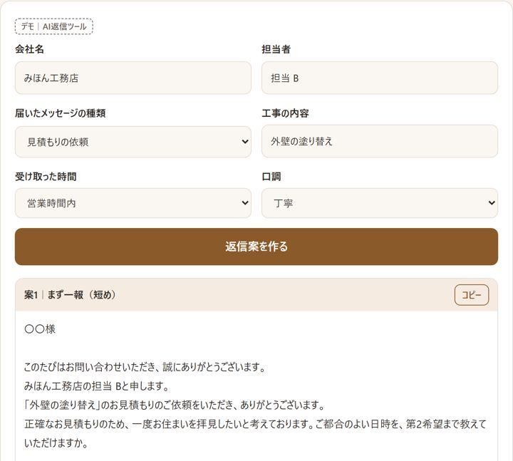
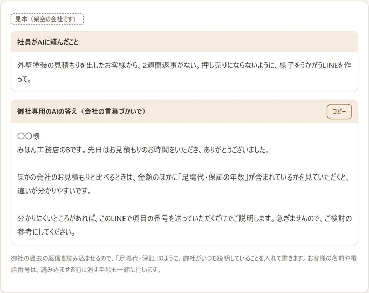
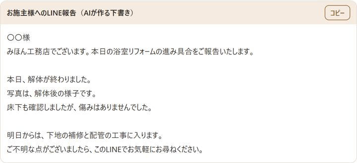
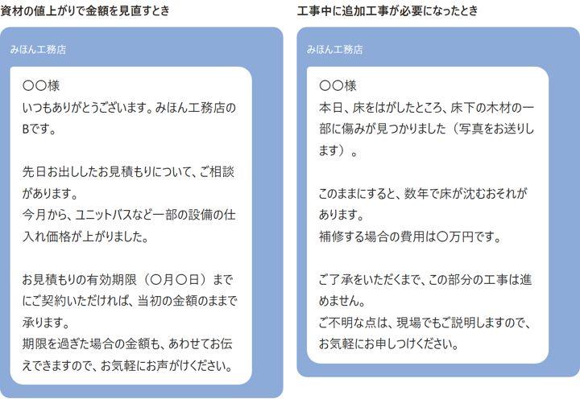
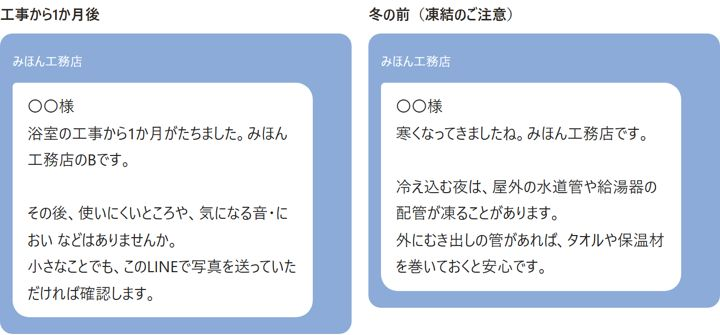

問い合わせへの返信、工事や内見のあとの連絡、口コミや施工事例の発信。AIを御社の仕事に合わせて設定し、明日から使える形でお渡しします。
元・神戸市役所（確認申請・中間検査・完了検査 6年／三宮駅前の再開発 3年）× 公式LINE運用 5年 × AIの実務
画像を押すと、見本のページで実際に触れます。会社名・人名はすべて架空です。

AI返信ツール＋公式LINE返信の遅れで失う受注を取り戻す
社長の言葉をAIに残す社長がいなくても同じ説明ができる
写真＋ひとことで工事の報告しゃべるだけでLINE報告文に
値上げ・追加費用の伝え方角を立てずに、すぐ連絡できる
OB客へのLINE案内次のリフォームと紹介につなげる「AIを使いたいけれど、まだ使えていない」会社がいちばん多いのが今です。返信・報告・施工事例・物件紹介・求人などの文章は、AIがいちばん得意な仕事。YNワークスは、AIを御社の仕事に合わせて設定した状態でお渡しし、使い方まで一緒に練習します。お客様とのやりとりの窓口には、利用者1億人超の公式LINEを使います。
建築士・宅建士の資格は持っていません。確認申請の代行や、個別の工事・物件についての判断、重要事項説明は行いません。
メニューの番号は、工務店・リフォーム会社向け／不動産会社向けのページでご確認ください。